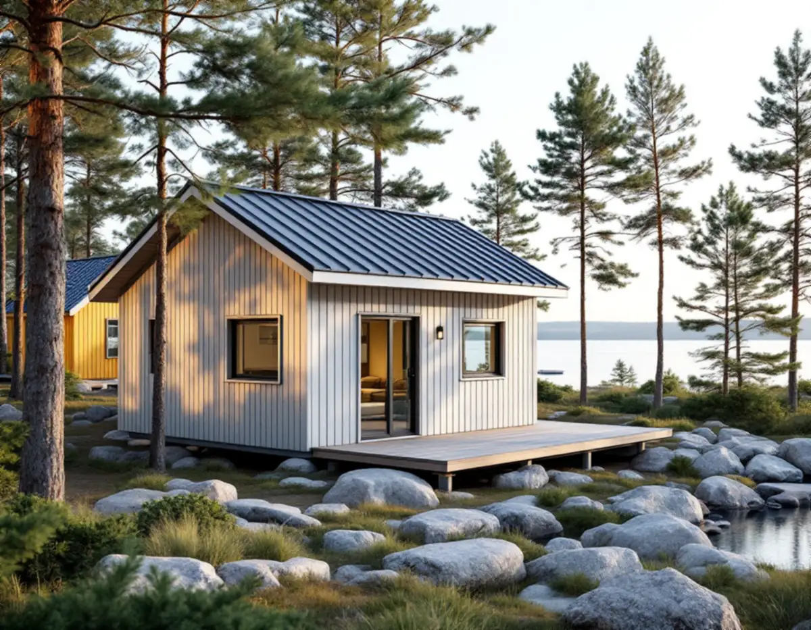
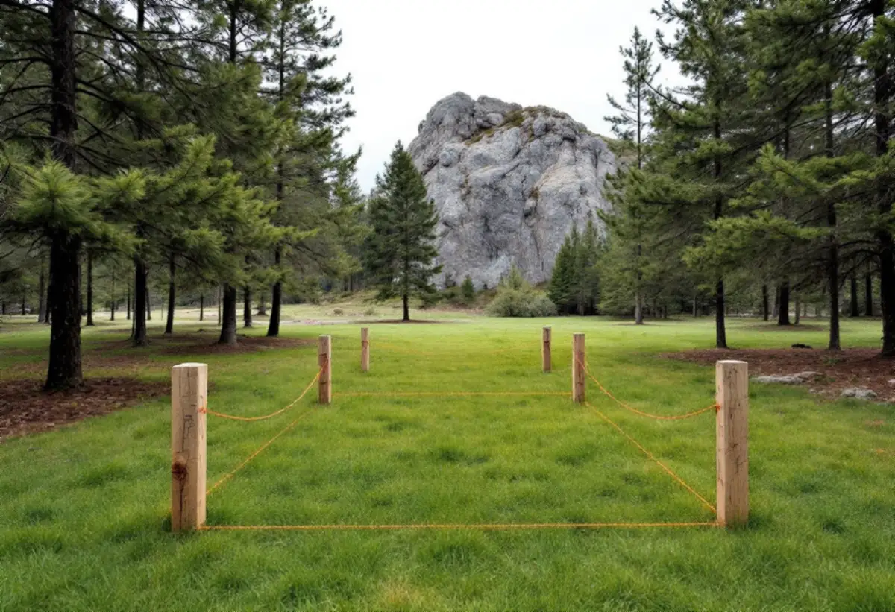
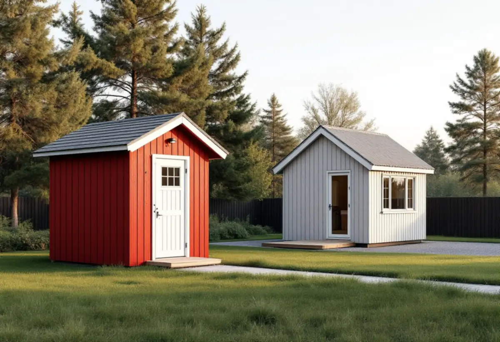

Fastigheten
Detaljplan, kulturmiljö, försvarets områden och strandskydd för just din tomt.
Från Handen och Jordbro till Dalarö, Utö och Ornö – i Haninge kan samma lilla hus vara lovfritt på en tomt och kräva bygglov på nästa. Geal Entreprenad AB bygger komplementbostadshus nyckelfärdigt och reder först ut vad som gäller för just din fastighet.

Plan- och bygglagen har en regel som många missar: inom eller i anslutning till ett område av riksintresse för totalförsvarets anläggningar krävs bygglov för ett nytt komplementbostadshus, om området är en flygplats eller ett övnings- eller skjutfält (9 kap. 36 §). Region Stockholms sammanställning pekar ut Utö skjutfält som riksintresse på land och redovisar dessutom ett påverkansområde för buller eller annan risk. Havsområdet vid Nåttarö är riksintresse som sjöövningsområde och berör flera kommuner, däribland Haninge.
Haninge kommun skriver att du behöver bygglov om du vill bygga ett komplementbostadshus i ett område som är utpekat som riksintresse för Försvarsmakten. Var gränserna går är inte självklart. I sitt granskningsyttrande över översiktsplanen Haninge 2050 noterar Länsstyrelsen att riksintressena för totalförsvaret och deras påverkansområden bara beskrivs i text och saknas på mark- och vattenanvändningskartan, och att en sådan redovisning behövs för att bedöma lovplikten. För en tomt på eller nära Utö frågar vi därför bygglovsenheten innan vi ritar.

Enligt Länsstyrelsen har Haninge sju områden av riksintresse för kulturmiljövården. Två av dem är Dalarö–Jutholmen–Dalarö skans (AB 605) och Österhaningebygden (AB 19). Region Stockholm listar också gruvsamhället och sommarnöjesmiljön på Utö (AB 602) och Sundby–Varnö på Ornö (AB 604), med herrgårdsmiljö, odlingslandskap och torp. Plan- och bygglagen kräver bygglov för nybyggnad inom en tomt som har skyddsbestämmelser i detaljplanen och inom ett bebyggelseområde som är särskilt värdefullt (9 kap. 37 §).
Kommunen skriver själv att stora delar av Haninge är kulturmiljöer och att skärpta krav gäller i särskilt värdefulla områden och riksintressen för kulturmiljövård. Det digitala kartskiktet som visar de särskilt värdefulla miljöerna håller på att uppdateras, och tills det är klart hänvisar kommunen till bygglovsenheten för besked om en enskild fastighet. Vi ber om det beskedet skriftligt och sparar det med husets övriga handlingar.
Haninge kommun påminner om att strandskyddet vanligtvis gäller 100 till 300 meter från kustlinjen, sjöar och större vattendrag, och att du då kan behöva dispens även för ett hus som är fritt från bygglov. På en tomt nära vattnet är det ofta placeringen som avgör, så vi mäter in avståndet till strandlinjen innan huset ritas.
Vatten och avlopp hanteras för sig. Den som installerar en anläggning för vattenförsörjning eller avlopp i en byggnad ska göra en anmälan och få startbesked innan arbetet börjar. Kommunen vill se en planritning som visar hur rummen ska möbleras och användas, ett förslag till kontrollplan och en VA-ritning som beskriver hur det ser ut i dag och hur det blir efter ändringen. Ska huset kopplas på kommunalt VA anmäls det till VA-enheten, och för ett enskilt avlopp söker du tillstånd. Huset får användas först när slutbeskedet har kommit.
Utanför de utpekade områdena gäller lagens mått: 30,0 kvadratmeter byggnadsarea och 4,0 meter till nocken inom detaljplan, 50,0 och 4,5 utanför, med en gemensam pott på 45,0 respektive 65,0 kvadratmeter. Haninge kommun påpekar att ett attefallshus eller en friggebod som redan står på tomten räknas in i potten, och att byggnaden inte får vara större än huvudbyggnaden.
Är du osäker ber kommunen dig beskriva vad du planerar med mått, produktblad och gärna ett fotografi. Kommunen skriver också att en överprövande myndighet kan komma fram till att en åtgärd är bygglovspliktig om någon klagar, trots kommunens riktlinjer. Den som vill ha ett beslut i förväg kan söka frivilligt bygglov. Altaner och verandor beskrivs under snickare i Haninge, och större byggprojekt i omvandlingsområden under byggföretag i Haninge. Måtten och paragraferna finns samlade i reglerna för attefallshus.

Detaljplan, kulturmiljö, försvarets områden och strandskydd för just din tomt.
Vid osäkerhet ber vi bygglovsenheten om ett skriftligt besked.
Plan med möblering, VA-ritning och situationsplan med avstånd.
VA, ventilation och eldstad anmäls och vi väntar på startbesked.
Grund, stomme, tak och installationer fram till nyckelfärdigt.
Huset tas i bruk när slutbeskedet har kommit.
Skatteverkets lista över arbeten som inte ger rotavdrag på ett småhus tar upp att bygga ett helt nytt hus eller en liknande fristående byggnad, och även att skriva bygglovshandlingar eller anlita en arkitekt. Ett komplementbostadshus är en ny fristående byggnad, så både ritningar och bygge räknas utan avdrag i vårt kostnadsförslag.
Husets storlek och planlösning, kök och badrum, grund på berg eller lera, avloppslösningen och om material kan köras ända fram eller måste fraktas med båt till en ö. Efter ett kostnadsfritt platsbesök får du ett skriftligt kostnadsförslag.
Komplementbostadshus på tomten.
Attefallshus →Takbyte, takbesiktning och plåtarbeten.
Takläggare i Haninge →Dalarö, Vendelsö och Brandbergen.
Takrenovering i Haninge →Vakuumtoalett, sluten tank och öarna.
Badrumsrenovering i Haninge →Nytt hus och tillbyggnad i omvandlingsområden.
Byggföretag i Haninge →Mustiga 50-tal och pastell.
Fasadmålning i Haninge →Tegelvillor, grupphus och panelade gårdar.
Fasadrenovering i Haninge →Sportstugor och fönster i skärgårdsväder.
Fönsterbyte i Haninge →Gårdens fönster, från boningshus till ladugård.
Fönsterrenovering i Haninge →Egnahem, sportstugor och hus i sluttning.
Golvläggare i Haninge →Laga och slipa trägolvet i villan.
Golvslipning i Haninge →Egnahem, grupphus och Dalarö.
Köksrenovering i Haninge →Egnahem, grupphus och sommarvillor i Haninge.
Målare i Haninge →Falsad plåt, sjöbodar och beslag i Haninge.
Plåtslagare i Haninge →Verandor, altaner och skärmtak.
Snickare i Haninge →Kontrollplan och riskbedömning vid takbyte.
Takbyte i Haninge →Ny tapet och gamla lager i äldre villor.
Tapetsering i Haninge →Lov, situationsplan och kontrollplan.
Tillbyggnad i Haninge →Folkhemsvillan inifrån.
Totalrenovering i Haninge →